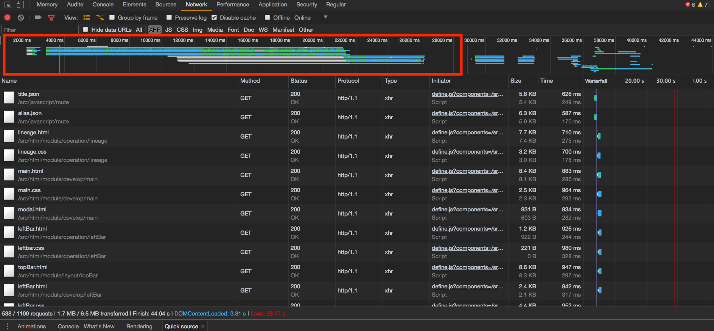
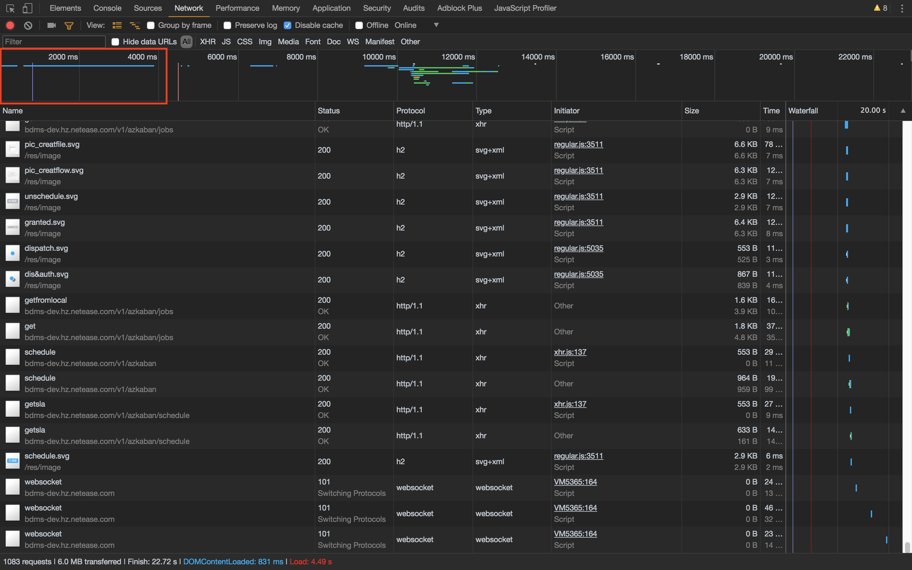
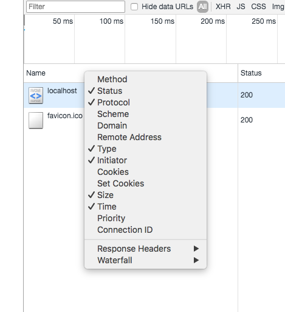
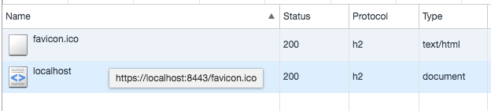
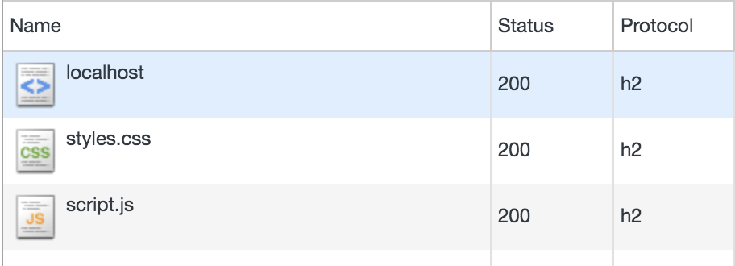

写作背景
笔者所在项目使用的前端技术比较老旧，在开发的过程中需要先启动一个后端项目 (tomcat + mysql + redis) 来做为静态服务器
然后使用的是一个公司内部的类AMD模块加载工具，每次刷新页面都要加载1000+ 的文件，页面的响应时间接近20s， 导致开发的过程非常痛苦
所以决定使用 HTTP/2 来开发一个开发服务器来加快页面的加载速度. 目前来说效果不错，相对于 HTTP1.1 来说加载速度提升了 50%。
对于开发环境与我们类似的项目，可以尝试一下。
理论基础
1. HTTP/2 的TCP连接复用
虽然我们开发的时候使用的是本地服务器，建立连接的速度和下载速度都很快，但是浏览器针对同一域名的并发请求是有上限的。
当所需要的文件数量很多时，我们每次只能请求一定数量的文件，当前面的文件的请求完成后才能去请求下一个文件，这就造成了堵塞。

从图中我们可以看到明显的链接限制和堵塞
而 HTTP/2 可以在同一连接上进行多个并发交换，可以避免出现因为浏览器的并发限制而造成的堵塞
HTTP/2 通过支持标头字段压缩和在同一连接上进行多个并发交换，让应用更有效地利用网络资源，减少感知的延迟时间。具体来说，它可以对同一连接上的请求和响应消息进行交错发送并为 HTTP 标头字段使用有效编码。 HTTP/2 还允许为请求设置优先级，让更重要的请求更快速地完成，从而进一步提升性能。出台的协议对网络更加友好，因为与 HTTP/1.x 相比，可以使用更少的 TCP 连接。 这意味着与其他流的竞争减小，并且连接的持续时间变长，这些特性反过来提高了可用网络容量的利用率。 最后，HTTP/2 还可以通过使用二进制消息分帧对消息进行更高效的处理。（超文本传输协议版本 2，草案 17） - https://developers.google.com/web/fundamentals/performance/http2/?hl=zh-cn
2. Server Push 服务器推送
HTTP/2 中最令人期待的特性就是 Sever Push (服务器推送)。
通过 Server Push，服务器可以对浏览器的单个请求返回多个响应，而不需要等待浏览器发出请求再给去响应。
简单举个🌰
- 浏览器向服务器发送 a.com 请求
- 服务器确定这个请求返回一个 index.html 文件，同时发现这个文件需要 style.css 和 script.js 文件
- 服务器向浏览器放回 index.html 的响应，同时告诉浏览器我这里有 style.css 和 script.js 文件你可能需要
- 浏览器收到 index.html 后，解析后发现需要 style.css 和 script.js，正好服务器端说可以推送这两个资源，浏览器就不需要再次发送请求去获取，而是直接就收服务器的推送
结合上面的连接复用，HTTP/2 可以极大的加快资源文件的加载速度

可以看到浏览器使用一个链接加载完了所有的资源文件
Nodejs HTTP/2 模块简单使用
这里先简单介绍下 Node 中 HTTP/2 的使用，下篇文章将详细阐述如何编写一个可以应用的 HTTP/2 开发服务器
1. 创建 HTTPS 证书
由于 HTTP/2 需要使用 HTTPS，这里我们需要先生成一个证书。
1
2
| openssl req -x509 -newkey rsa:2048 -nodes -sha256 -subj '/CN=localhost' \
-keyout localhost-privkey.pem -out localhost-cert.pem
|
2. 项目结构
1
2
3
4
5
6
7
8
9
10
11
12
13
| .
├── certificate
│ ├── localhost-cert.pem
│ └── localhost-privkey.pem
├── node_modules
├── package-lock.json
├── package.json
├── src
│ └── app.js
└── www
├── index.html
├── script.js
└── styles.css
|
1
2
3
4
5
6
7
8
9
10
11
12
13
14
15
16
17
18
19
|
<!DOCTYPE html>
<html lang="en">
<head>
<meta charset="UTF-8">
<meta name="viewport" content="width=device-width, initial-scale=1.0">
<meta http-equiv="X-UA-Compatible" content="ie=edge">
<title>HTTP2 demo</title>
<link rel="stylesheet" href="styles.css">
</head>
<body>
<div id="content"></div>
<script src="script.js"></script>
</body>
</html>
|
1
2
3
4
5
|
const content = document.querySelector("#content");
content.innerHTML = `<h1>Hello HTTP/2</h1>`;
|
1
2
3
4
5
|
h1 {
color: cornflowerblue;
}
|
创建如上的项目结构
3. 创建服务器
1
2
3
4
5
6
7
8
9
10
11
12
13
14
15
16
17
18
19
20
21
22
23
24
| const http2 = require("http2");
const fs = require("fs");
const path = require("path");
const server = http2.createSecureServer({
key: fs.readFileSync(
path.resolve(__dirname, "../certificate/localhost-privkey.pem")
),
cert: fs.readFileSync(
path.resolve(__dirname, "../certificate/localhost-cert.pem")
)
});
server.on("error", err => console.error(err));
server.on("stream", (stream, headers) => {
stream.respond({
"content-type": "text/html",
":status": 200
});
stream.end("<h1>Hello World</h1>");
});
server.listen(8443);
|
打开控制台，进入 Network ，开启 Protocol 显示

访问 https://localhost:8443/ ，即可看到协议变为 h2

4. 启用服务器端推送
1
2
3
4
5
6
7
8
9
10
11
12
13
14
15
16
17
18
19
20
21
22
23
24
25
26
27
28
29
30
31
32
33
34
35
36
37
38
39
40
41
42
43
44
45
46
47
48
49
50
51
52
53
54
55
56
57
58
59
60
61
62
63
64
65
66
67
68
69
70
71
72
73
74
75
76
77
78
79
80
81
82
83
84
85
86
87
88
89
90
91
92
93
94
95
96
| const http2 = require("http2");
const fs = require("fs");
const path = require("path");
const pemPath = path.resolve(__dirname, "../certificate/localhost-privkey.pem");
const certPaht = path.resolve(__dirname, "../certificate/localhost-cert.pem");
const { HTTP2_HEADER_PATH, HTTP2_HEADER_STATUS } = http2.constants;
function createFileInfoMap() {
let fileInfoMap = new Map();
const fileList = fs.readdirSync(staticPath);
const contentTypeMap = {
js: "application/javascript",
css: "text/css",
html: "text/html"
};
fileList.forEach(file => {
const fd = fs.openSync(path.resolve(staticPath, file), "r");
const contentType = contentTypeMap[file.split(".")[1]];
const stat = fs.fstatSync(fd);
const headers = {
"content-length": stat.size,
"last-modified": stat.mtime.toUTCString(),
"content-type": contentType
};
fileInfoMap.set(`/${file}`, {
fd,
headers
});
});
return fileInfoMap;
}
const staticPath = path.resolve(__dirname, "../www");
const fileInfoMap = createFileInfoMap();
function push(stream, path) {
const file = fileInfoMap.get(path);
if (!file) {
return;
}
stream.pushStream({ [HTTP2_HEADER_PATH]: path }, (err, pushStream) => {
pushStream.respondWithFD(file.fd, file.headers);
});
}
const server = http2.createSecureServer({
key: fs.readFileSync(pemPath),
cert: fs.readFileSync(certPaht)
});
server.on("error", err => console.error(err));
server.on("stream", (stream, headers) => {
let requestPath = headers[HTTP2_HEADER_PATH];
if (requestPath === "/") {
requestPath = "/index.html";
}
const fileInfo = fileInfoMap.get(requestPath);
if (!fileInfo) {
stream.respond({
[HTTP2_HEADER_STATUS]: 404
});
stream.end("Not found");
}
if (requestPath === "/index.html") {
for (let key in fileInfoMap.keys()) {
push(stream, key);
}
}
stream.respondWithFD(fileInfo.fd, {
...fileInfo.headers
});
});
server.listen(8443);
|
访问 https://localhost:8443 就可以看到 styles.css 和 script.js 是通过 HTTP/2 推送过来的

相关链接
- HTTP/2 简介 | Web | Google Developers
- HTTP/2 Server Push 详解（上） | AlloyTeam
- HTTP/2 Server Push 详解（下） | AlloyTeam
- demo 下载地址